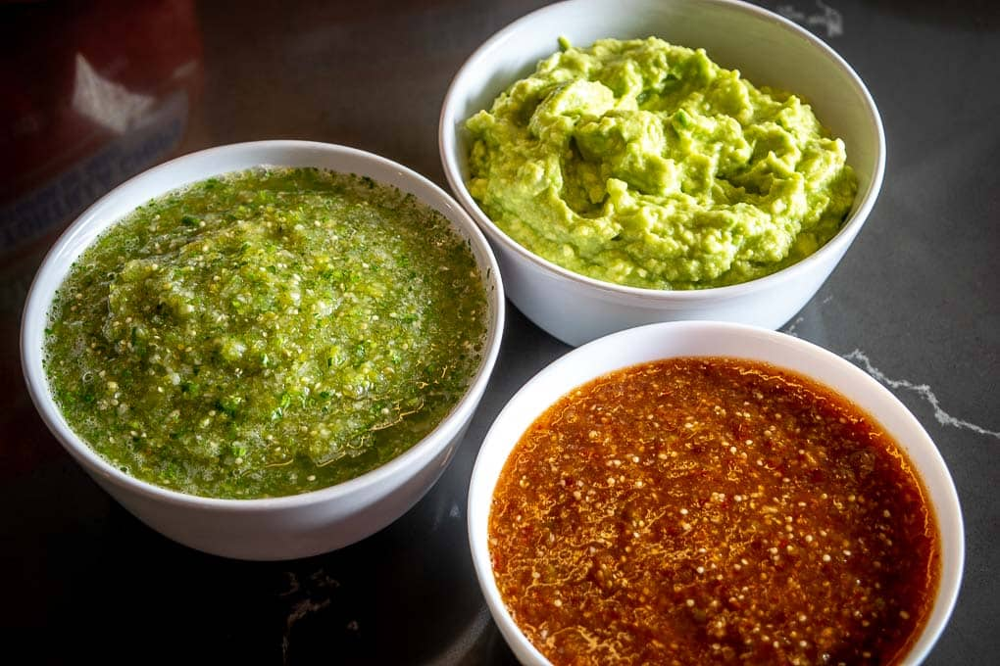
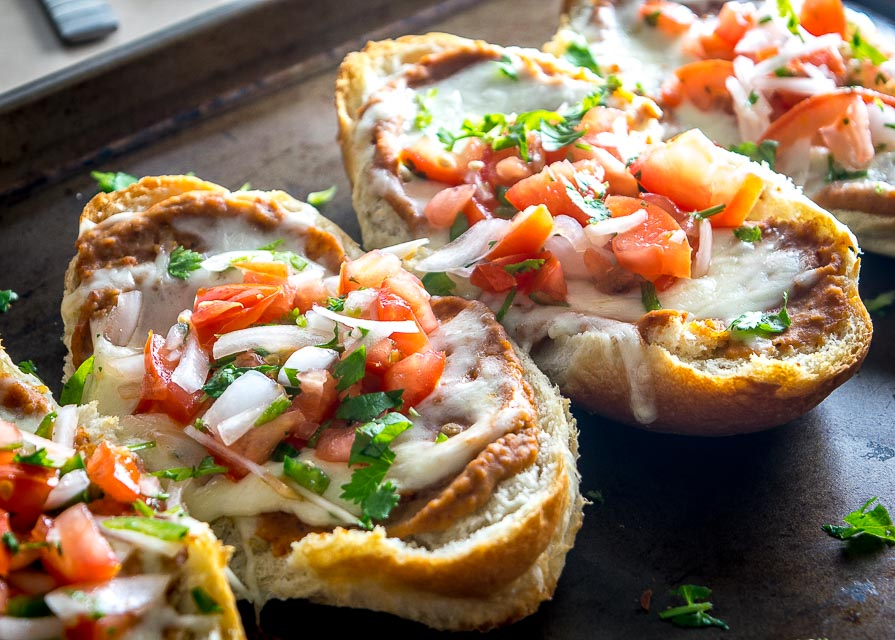
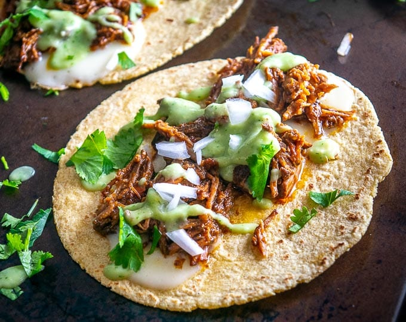

Yum Mexican

Guacamole and Green & Red Salsa
PREP TIME:
30 Minutes
SERVINGS:
10
COURSE:
Appitizer
Ingredients
- 12-15 tomatillos (1.5 lbs.)
- 3 jalapenos
- 1 onion
- 4 garlic cloves
- 15-20 sprigs cilantro
- 2 chipotles in adobo
- 3 limes
- 5 avocados (or more for larger groups)
- 2-3 bags tortilla chips
Instructions
-
Roasting the tomatillos takes the longest so it's best to start
with that. De-husk the tomatillos and give them a good rinse.
I usually de-stem them as well knowing that any juices leftover
in the roasting pan will go in the blender as well. Place them
on a baking sheet and roast for 20 minutes in the oven at
400F.
- For the Guac, start by finely dicing 1/4 onion. Smoosh
the diced onion with the back of a fork and add it to a mixing
bowl along with: the flesh of 5 avocados, the juice of
2 limes, a heaping teaspoon of salt. Mush and
combine well. You are welcome to add some finely diced
cilantro or jalapeno, but lately I keep it simple. Take a
final taste for seasoning, adding more pinches of salt or lime
if you think it needs it. Note: 1/4 teaspoon of salt per
avocado is a good starting point to keep in mind if you're using
additional avocados.
-
Once the tomatillos are roasted you can start building the
Salsas. For the Salsa Verde add the following ingredients to a
blender: 8-10 roasted tomatillos, 1/2 onion, 2 peeled garlic
cloves, 15-20 sprigs cilantro, and 1-2 jalapenos. Combine
well and taste for heat. For a milder version, start with only a
single jalapeno (or half) and taste test from there, adding more
slivers of jalapeno if you want to increase the heat.
-
For the Tomatillo Chipotle Salsa add the following ingredients
to a blender: 4-5 roasted tomatillos, 2 peeled garlic cloves,
and 1-2 chipotles in adobo. Combine well and taste for heat.
For a milder version start with just a single chipotle (or half)
, adding more from there and taste testing along the way.
Note: I usually slice open and scrape out the seeds of
the chipotles as they seem to harden over time, but you can
consider this optional.
-
Place the Guacamole, Salsa Verde, and Tomatillo Chipotle Salsa
in the middle of the table and surround it with tortilla chips.
Enjoy!!

Molletes (Mexican Bean & Cheese Sandwiches)
PREP TIME:
10 Minutes
COOK TIME:
10 minutes
TOTAL TIME:
20 minutes
SERVINGS:
4
COURSE:
Side
Ingredients
- 2 cups refried beans (or bean puree)
- 1-2 cups shredded cheese
- 3-4 bread rolls
- butter (optional)
For the Pico de Gallo
- 2 plum tomatoes
- 1/2 onion
- 1/2 jalapeno
- 1 lime
- 15-20 sprigs cilantro
- 1/4 teaspoon salt (plus more to taste)
For the Refried Beans
- 1 can black beans
- 1/2 onion
- 2 garlic cloves
- 2 chipotles in adobo
- 1 tablespoon adobo sauce
- 1/2 teaspoon cumin
- 1/2 teaspoon salt
- freshly ground black pepper
- 1/2 cup water (or stock)
Instructions
- If you want to make the refried beans start by roughly chopping
1/2 an onion and peel 2 garlic cloves. Saute the
onion and garlic in a glug of oil over medium heat for 5-7
minutes. Drain and rinse one can of black beans.
Add the black beans to the onion mixture along with 2
chipotles in adobo, 1 tablespoon adobo sauce, 1/2 teaspoon cumin
, 1/2 teaspoon salt, freshly ground black pepper, and 1/2 cup
water (or stock). Simmer for a few minutes until heated
through. Combine the bean mixture in a blender or food
processor. Salt to taste.
-
If you're making fresh Pico de Gallo start by giving the veggies
a good rinse. Chop up 2 tomatoes, 1/2 onion, 1/2 jalapeno,
and 15-20 sprigs cilantro. Add to a mixing bowl along with
1/4 teaspoon salt and the juice of 1/2 lime. Combine
well and take a taste for seasoning, adding more salt or lime
juice if necessary.
-
Cut the bread rolls in half and bake them in a 400F oven
for a few minutes before adding any toppings -- this will help
crisp them up. You can optionally add a layer of butter to each
roll.
-
Top each roll with a layer of beans and shredded cheese. Bake
for 3-5 minutes or until the cheese is thoroughly melted.
-
Top with freshly made Pico de Gallo and serve immediately.
Enjoy!

Birria de Res (Beef Birria)
PREP TIME:
30 Minutes
COOK TIME:
6 Hours
TOTAL TIME:
6 1/2 Hours
SERVINGS:
8
COURSE:
Main
Ingredients
- 3 lbs. beef brisket or chuck roast
- 4-5 Roma tomatoes
- 1 onion
- 6 garlic cloves
- 3-4 Ancho dried chiles
- 2-3 New Mexican dried chiles
- 2 chipotles in adobo (optional)
- 1-2 tablespoons adobo sauce (from the can, optional)
- 2 cups stock
- 1 teaspoon cumin
- 2 teaspoons Mexican oregano
- 1/8 teaspoon cinnamon
- pinch of ground clove
- 2 teaspoons salt (plus more to taste)
- freshly cracked black pepper
- olive oil
For the Tacos (optional)
- corn tortillas
- Salsa de Aguacate
- finely chopped raw onion
- cilantro
- squeeze of lime
Instructions
- Start by rinsing and de-stemming the tomatoes. Roast them in a
400F oven for 20-25 minutes or until you need
them.
-
Wipe off any dusty crevasses on the dried chiles. De-stem and
de-seed the chiles, but don't worry about getting rid of every
last seed. Roast them in the oven for 1-2 minutes or
until warm and fragrant. Add the chile pieces to a bowl and
cover them with the hottest tap water you've got. Let them
reconstitute for 20 minutes or so.
-
Roughly chop 1 onion and peel 6 garlic cloves. Add
a glug of oil to a skillet on medium heat and saute the
onions and whole garlic cloves. Once the onion has softened and
lightly browned you can add this mixture to the blender.
-
Add a thin layer of oil to a skillet and preheat to
medium-high. Chop up the brisket into chunks and give it
a good salting. Sear each side of the beef in the skillet for a
few minutes or until it is browning. Add the seared meat pieces
to the slow cooker. You can optionally deglaze the pan with the
2 cups of stock that's used to liquefy the sauce.
-
Before draining the reconstituted chiles take a taste of the
soaking liquid. If it tastes bitter to you then use stock for
the sauce. If you like the flavor you are welcome to use the
soaking liquid in place of the stock.
-
Add the drained chiles, roasted tomatoes, and the onion-garlic
mixture to a blender along with: 2 cups of stock (or what you
used to deglaze the meat pan), 2 chipotles in adobo
(optional), 1-2 tablespoons adobo sauce from the can
(optional), 1 teaspoon cumin, 2 teaspoons Mexican oregano,
1/8 teaspoon cinnamon, pinch of ground clove, 2 teaspoons
salt, and some freshly cracked black pepper. Combine
well. Note: if you're using stock that's high in
sodium you can consider starting with a single teaspoon of
salt and going from there.
-
Take a taste of the sauce. An easy to way to add more heat is to
add an additional half or whole chipotle. Keep in mind that the
sauce has to compete with the big flavor of the beef so I tend
to make it salty and fiery at this point.
-
Cover the seared meat pieces with the sauce. Slow cook on low
for 4-6 hours.
-
Once cooked you can optionally skim off any fat that has risen
to the surface. Shred the beef using two forks and discard any
fatty chunks that you don't want to eat.
-
Add the shredded beef (or as much as you are using for tonight's
meal) to a separate bowl and add enough sauce to give it a
thorough coating. Adding the sauce to the shredded beef is the
key so don't skip this step!
-
One serving option is to simply add the shredded beef back to
the sauce and serve it soup style -- you may need to thin out
the sauce with some stock if you choose this option.
-
But I chose tacos for this batch. Add corn tortillas to a dry
skillet over medium heat along with slices of cheese.
Once the cheese is melted and the underside of the tortillas are
forming light brown spots they are ready to go. You can
optionally add the meat to the tortillas in the skillet for a
quick reheat.
-
I topped these tacos with Salsa de Aguacate, finely chopped raw
onion, freshly chopped cilantro, and a squeeze of lime.
-
Store leftover Birria in the fridge where it will keep for a few
days.